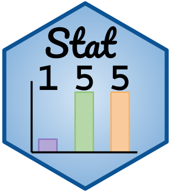

STAT 155: Introduction to Statistical Modeling
Section 1 (Fall 2024)

Learn the fundamentals of summarizing, visualizing, and modeling data to answer research questions
Instructor: Leslie Myint
Class meeting times: MWF 12:00-1:00pm
Class location: THEATR 204
Instructor drop-in hours:
- Olin-Rice 232
- Mondays, Thursdays, and Fridays: 2-3pm
- Tuesdays: 3:30-4:30pm